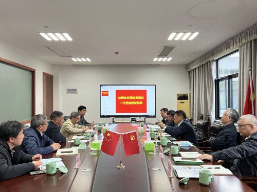
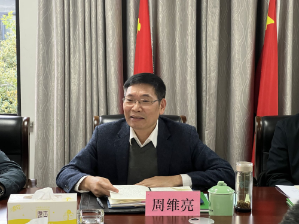

| 索引号： | 00248247X/2022-03159 | 公开方式： | 主动公开 |
|---|---|---|---|
| 文号： | 公开日期: | 2022-05-09 | |
| 发布单位： | 浙江省粮食和物资储备局 | 有效性: |
为深入贯彻习近平总书记关于“藏粮于地、藏粮于技”的指示精神和省委农村工作会议暨粮食安全工作会议精神，更好推动稻作科技创新，服务“五优联动”，支持优质粮食工程建设，促进粮食产业高质量发展，带动农民增收、企业增效，让消费者满意，助力我省共同富裕示范区建设，3月29日下午，省粮食物资局党组书记、局长周维亮带队赴中国水稻研究所走访调研，省局办公室、粮食处、安监处及省储备粮公司负责人参加。
调研组一行先后参观考察了中国水稻研究所成就展厅、农业农村部稻米及制品质量监督检验测试中心、国家水稻种质资源库，详细了解研究所发展历程、稻米质量安全与品质检测技术研究、全国水稻种质资源收集保存及利用等情况，并召开座谈会。
座谈会上，中国工程院院士、中国水稻研究所所长胡培松从水稻产业发展概况、优质稻发展问题、下步发展思路与对策等方面作了介绍。双方重点就稻米安全、优质品种培育、全产业链融合等进行了深入交流。
周维亮指出，当前外部形势复杂严峻，不确定性不稳定性因素增多，粮食安全的极端重要性和现实紧迫性进一步凸显。要守住粮食安全底线，必须要抓好种子这一关键，落实好“藏粮于地、藏粮于技”。水稻是我国第一大口粮作物，作为以水稻为主要研究对象的多学科综合性国家级研究所，中国水稻研究所为保障粮食安全特别是口粮安全做出了重大贡献。
周维亮希望，今后双方进一步密切交流、深化合作，坚持“粮心为民”，充分发挥水稻研究所优势，加强政产学研融合联动，稳固粮食安全基础，端好人民群众的“饭碗”。一是聚焦增效增收，加快推进“五优联动”。扩大推广优质水稻品种，完善种子鉴定、交易等机制，推动优选优种。加强优质稻生产技术指导，切实把服务送到田间地头，加快提高粮食生产效率和效益，推动优种出优粮。发挥订单引导作用，将订单向优质品种倾斜，向少数优质品种集中。研究完善优质粮食清理烘干、适度加工标准和规范，实现产品升级，推动优企卖优粮，增加优粮供给，让粮食产业有竞争力，让种粮农民有钱赚。二是突出多跨协同，系统治理超标粮食。加强基础研究、应用研究，加快推动低重金属积累的品种培育与鉴定，先由小区域进行试种，为推广种植提供借鉴经验。按照“整体智治、唯实惟先”理念，突出多跨协同，强化工作统筹，推进资源整合、力量整合，全面落实安全利用技术指导，加快扩大低重金属积累品种种植，种出更多“放心粮”。三是坚持市场导向，持续提升本土品牌。加强“粮田”与“市场”有效衔接，立足浙江本土资源特色，积极培育本地稻米加工企业，探索塑造粮食品牌，延长产业链、提升价值链，提高浙江粮食“含金量”，推动“好粮”卖“好价”。同时，根据市场需求的多样化，以精品加工、小包装出售等方式，促进效益更大化。